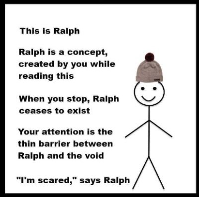

"It’s all fun and games, until someone loses an I." --Unknown
We’re afraid of it, this death thing.
Very afraid.
That's why we spend an inordinate amount of our lives trying to protect against it, and keep it away. We have seat belts and prayer meetings and “Gezundheit!”s and mittens and MRI’s and vaccinations and rotated tires and chemo and Crossfit and broccoli.
Not that we don’t enjoy tempting such terrifying danger, like with scary movies, roller coasters, bungee-jumping, sky diving, speed racing. “All who gaze upon us, know that we have outwitted and are the master of death!”
Long as we don’t actually die. Then no one is laughing.
It makes sense though. After all, there was a loved one here- a person, an individual- with their story and history and loves and peccadilloes.
They were here.
And then they weren’t.
We call this “loss,” as in, "I lost my mom this weekend.”
Here we had access to a person all this time, and then death had the nerve to take away…
Something we already had.
Without asking us. Without our control. And not just for a while, but permanently.
This is not ok with us fill-er-up humans. We want more, dammit, not less. Emptiness where filled-up space used to be?
NO.
So this is what we fear- this apparent disappearance of a self.
Which is not unreasonable, given that entire lifetimes are spent protecting that image of a person. “This is who I am. This is what happened to me. This is what I offer. This is who I have in my life.”
Every single moment of every single life is about perpetuating that story of a past, prolonging its likes and dislikes, protecting it from loss, polishing its image and presentation, getting others to buy in.
Like for my mom, who spent her last night cleaning her desk so it looked good when she was found, and who chose her last clothes carefully, knowing she would go to the coroner’s in them.
And then death says, “That’s enough.” And we can no longer pull off pretending there’s a person there anymore.
We cannot bear the seeming end of the story.
There is nothing humans hate, tantrum against and wail about, more.
Meanwhile, focused on what is lost, focused on the emptiness of the end of the movie, we may fail to notice that…
We were never that movie to begin with. We were never bodies in the movie either.
Because skin, hearts, brain-meats- they don’t care about stories.
And whatever animates the body, whatever is more than the brain, the images, the “personality”,
Whatever loved the story...
Well, that isn’t biological.
Which means it was never alive.
Which means it can’t die.
Or leave. Or be “lost.”
After all, since it's not trapped inside a body, it's already everywhere.
So who knows. Without the encumbrance of a dragged-around fiction,
Without trying to squeeze something so very very big into a teeny little biological cluster of cells,
Without being forced into the box of person-ality and person-hood,
We might discover that we are so much closer to our loved ones than we ever had been in so-called life.
We might discover, along with an untamed love and a freedom and a closeness so very vast and so very loving…
That there’s no reason to cry for the false loss of a false self,
When instead we might absorb into the truth and incomprehensible enormity of
The great inclusiveness
That has been gained.
So,'bye,
and hi,
mom, and dad, and every loved one ever. ❤️
every week.
"Transiency makes evident the Unchanging."
--Wu hsin
No Death, No
